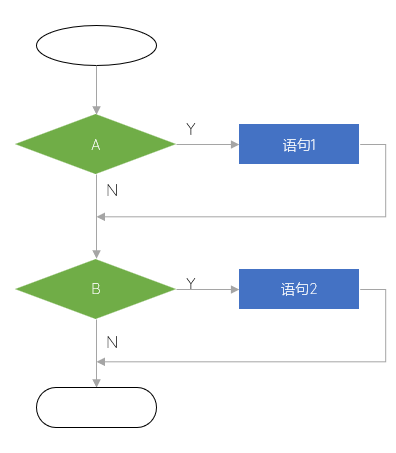
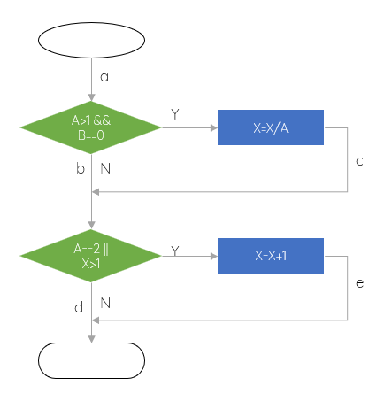

- 原则目的
- . 尽早、不断
- . 不要测试自己的程序
- . 有效数据测试、无效数据测试
- . 回归测试
- 测试方法
-
静态测试：被测程序不在机器上运行，人工测试
. 桌面检查
. 代码审查
. 代码走查
动态测试. 黑盒测试
. 白盒测试
黑盒 Black-box Testing
- . 也叫 数据驱动测试
- . 不知道里面情况，仅仅知道|只关注输入输出
- . 测试重点：黑盒测试侧重于验证软件的功能、外部行为和符合性。它关注于测试软件对各种输入情况的响应和输出是否符合预期
- . 方法和技术：黑盒测试使用技术如等价类划分、边界值分析、决策表和状态转换图等，以设计有效的测试用例和测试方案
白盒 White-box Testing
- . 也称为 结构化测试或逻辑驱动测试、透明盒测试；知道盒子里面的情况
- . 基于代码的测试
- . 测试软件的内部结构、逻辑和实现细节；涉及阅读源代码、文档或与开发人员进行讨论，以获得关于软件实现的详细信息
- . 编写测试用例和设计测试数据，测试用例应该覆盖各种代码路径、边界条件和异常情况，以确保对软件的不同部分进行充分的测试
- . 通常通过检查代码、路径覆盖和代码逻辑来验证软件的正确性和质量
- 优点
- 代码覆盖率高
- 缺点
- 覆盖所有代码路径难度大
- 业务功能可能覆盖不全
- 测试开销大
- 分类
-
语句覆盖判定覆盖条件覆盖组合条件覆盖路径覆盖
-
 测试逻辑 - 语句覆盖 Statement Coverage
- . 也称行覆盖 Line Coverage，段覆盖 Segment Coverage，基本块覆盖 BasicBlock Coverage
- . 所有可执行的语句。。。通常不包括控制语句，因为控制语句100%会执行
- . 使用尽可能多的测试用例去测试程序，使得程序的每个语句至少执行1次
- . 很弱的覆盖标准
-
语句覆盖 用例 A B 1 T T - 以下测试用例是否满足语句覆盖 - 注意：X随着条件变化
-
语句覆盖 用例 A B X 1 2 0 4 -
 语句覆盖实例 - 判定覆盖 Decision Coverage
- . 也叫分支覆盖
- . 不仅每个语句至少执行1次，每个判定的每个可能的结果|真假|分支也要至少执行1次
- . 不考虑编译器的短路处理
- . 针对图1的条件覆盖，需要2个测试用例：12、34、56
- . 注意：2个测试用例即可满足，不需要4个
-
判定覆盖 用例 A B 1 T T 2 F F 3 T F 4 F T 5 F T 6 T F - 以下测试用例是否满足条件覆盖 - 注意：X随着条件变化
-
语句覆盖 用例 A B X 1 2 0 4 2 1 1 1 -
判定覆盖实例 - 判断覆盖是100%，则语句覆盖也是100%，反之亦然
-
对错
- [分析] B、错；正向对，反之错
- 条件覆盖 Condition Coverage
- . 所有条件的可能取值情况
- . 比判断更详细。判断覆盖只看结果，条件覆盖需要测试每个条件的可能情况
- . A||B的结果是真或假，但是导致真假的条件A、B的取值各不相同
- . 覆盖了条件测试，不一定覆盖到所有分支
- . 条件覆盖100%，判断覆盖不一定是100%，语句覆盖也不一定是100%
-
判断覆盖和条件覆盖 A B A||B T T T T F F T - . 可以看出。结果为T的时，满足条件覆盖，但是判断条件F不满足，相应的语句覆盖也不一定满足
- 根据下图写出条件覆盖的测试用例
-
条件覆盖实例 -
标记每个条件
标记条件 条件 取值 标记 A>1 T T1 F F1 B==0 T T2 F F2 A==2 T T3 F F3 X>1 T T4 F F4 写测试用例写测试用例 测试用例 A B X 所走路径 覆盖条件 case1 2 0 3 a c e T1 T2 T3 T4 case2 1 0 1 a b d F1 T2 F3 F4 case3 2 1 1 a b e T1 F2 T3 F4 case4 1 0 3 a b e F1 T2 F3 F4 - [结论] case3和case4两个用例就可以完成条件覆盖测试，但是没有覆盖到所有分支
- 路径覆盖 Path Coverage
- . 最强的覆盖标准
- . 从开始到结束，程序的每条可能执行到的路径都要经过1次
- . 路径覆盖可以满足条件覆盖，也可以满足判断覆盖
- . 满足路径覆盖的测试不一定满足组合条件覆盖，需要配合其它方法，保证程序的正确性
- . 针对多分支多循环，路径覆盖测试数目急剧增加，导致无法实现所有路径覆盖
- . 针对图1的路径覆盖，需要4个测试用例
-
判定覆盖 用例 A B 1 T T 2 F F 3 T F 4 F T - McCabe复杂度
- . 边Edge
- . 节点Node，也叫顶点Vetex
- . 区域：边和节点围成的范围叫做区域；+1：整个程序也是一个区域
- . 有了分支和循环导致的程序复杂度提升
- 环路复杂度 = 闭环个数 + 1 = 判定节点个数P + 1 = 边E + 节点N - 2
- 求图4的环路复杂度
- 2 + 1 = 3
- 2 + 1 = 3
- 7 - 4 = 3
- 答题技巧
- . 在图上划线，确保覆盖到所有的语句或路径